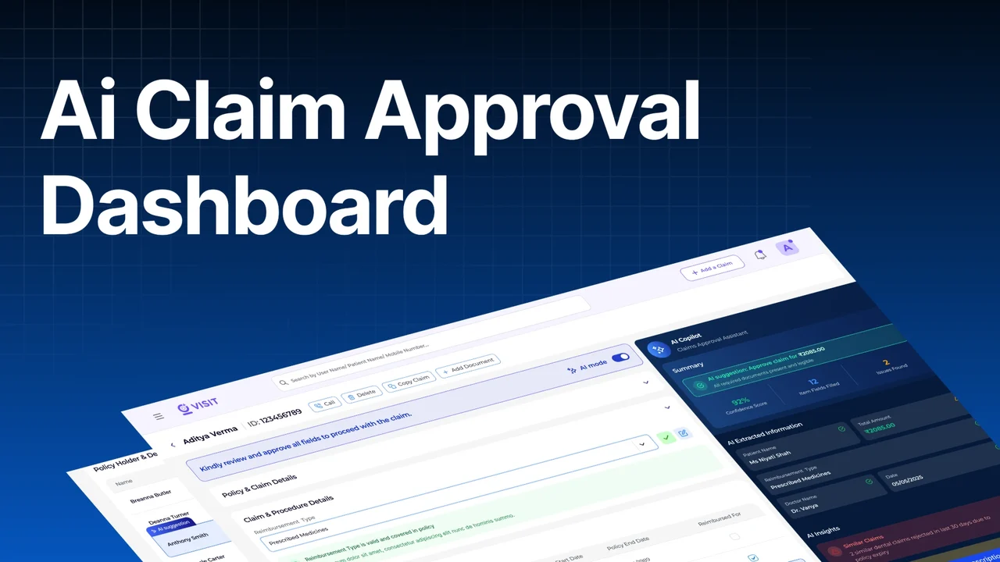
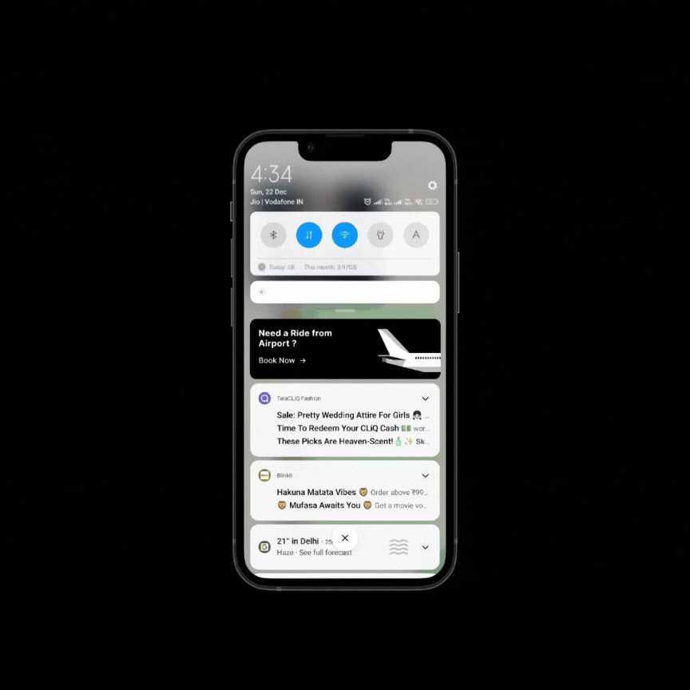
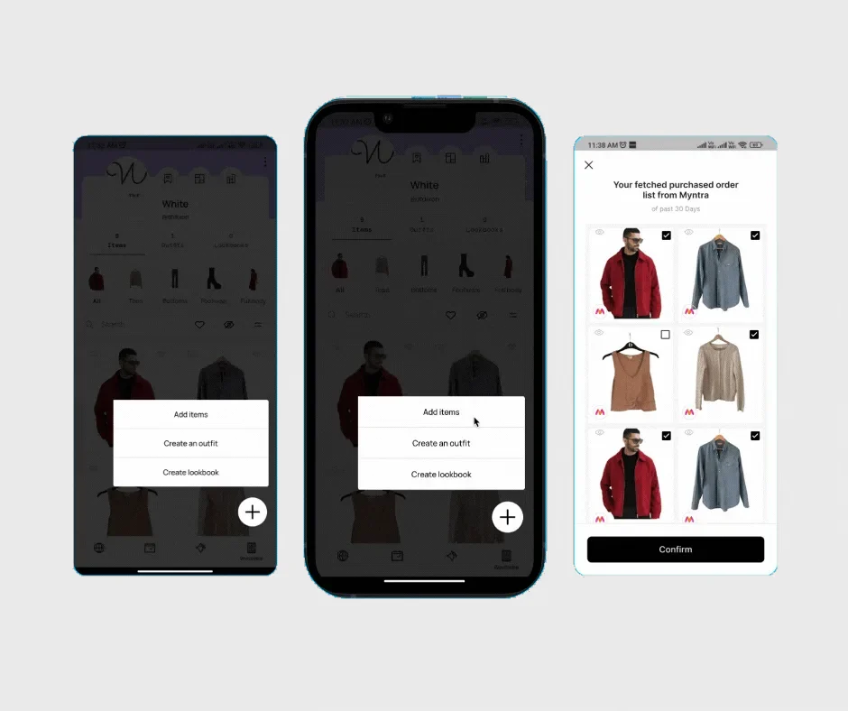
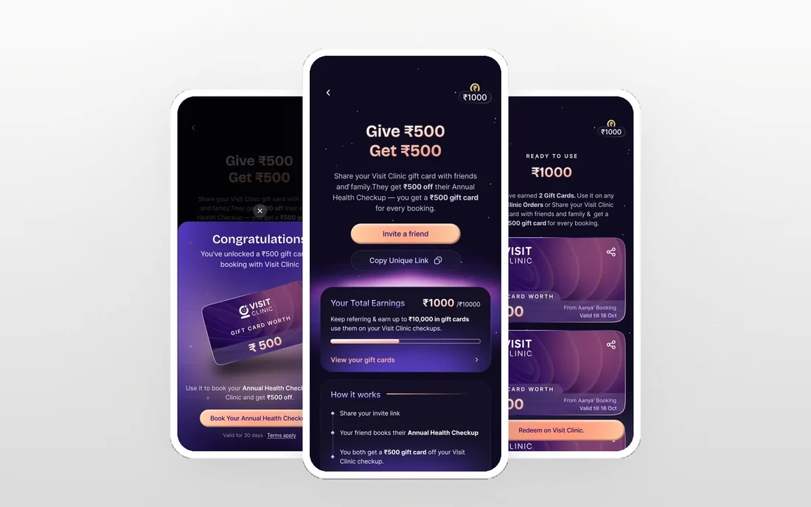
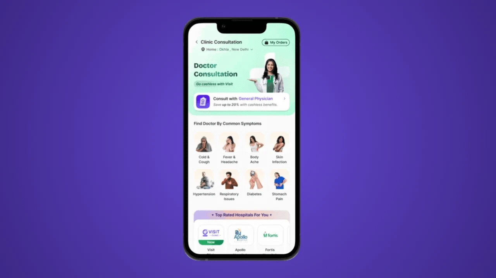

ALL CASE STUDIES
Everything I’ve worked on.
Healthcare products I've shipped, plus a few side projects and AI experiments. Open any card to see the problem and how I solved it. I'm available for hire.

Clearing claim backlogs by helping doctors review reimbursements with AI −87%claim review time, 30 → 4 min View case study
Solving drop-offs in Uber’s airport cab bookings A concept study, written up on Medium Read on Medium
Solving user frustrations with a virtual wardrobe experience A concept study, shared as a Figma deck View in Figma Giving users a real full-body checkup, not just blood tests sold as one 1 cartpathology + radiology, booked together View case study Growing lab revenue by letting employees extend their sponsored checkup to their family 32.6%of order-timeline visitors used it View case study Designing a 0→1 Digital Clinic experience by helping patients know where they are, what’s next and how long it will take ~100app bookings in one day View case study
Making clinic referrals feel like a real gift, not another coupon ↑ Ordersmore clinic orders and app downloads View case study Exploring how AI tools can speed up UI work, through a wallet card interaction 2–3 hrsdesigned and prototyped with Claude and Figma Make View case study
Solving self-booking drop-offs in offline doctor consultations ↑ Retentionhigher user satisfaction and retention View case study Making a wardrobe app feel like a real wardrobe, not a list of photos 3 weeksexperimental prototype View case studyIf you'd like to work together, get in touch.